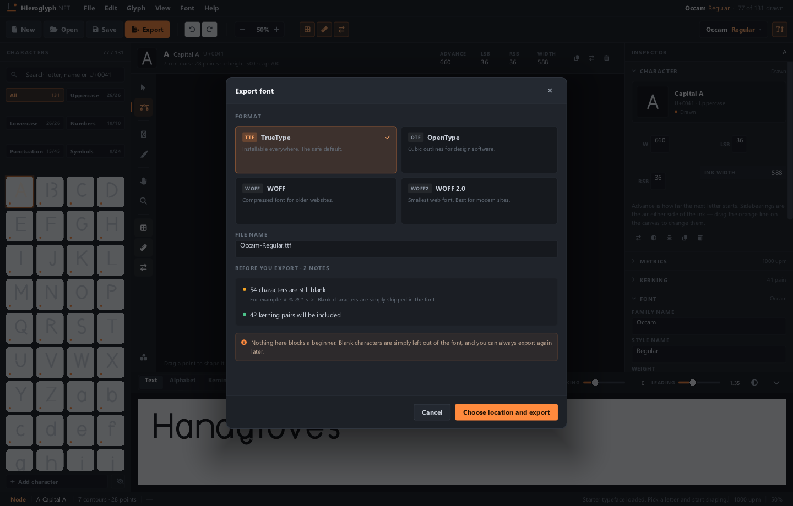
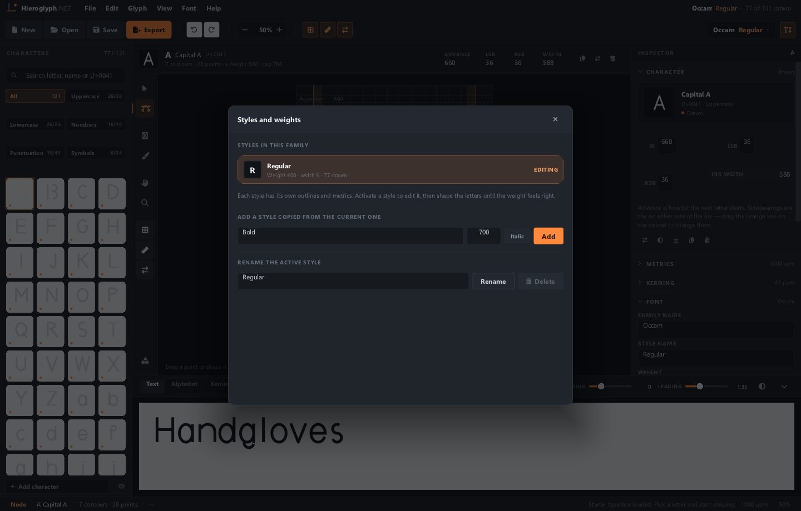

Exporting and installing
Export is not a technical afterthought. It checks the font, explains anything unfinished in plain language, compiles the outlines and lets you install the result immediately.
The export flow
- Press Ctrl+E or click Export in the toolbar.
- Choose a format. TTF is the safe default for installing; WOFF2 is the smallest for the web.
- Read the checks. Warnings describe unfinished characters and spacing; they do not stop you.
- Choose a folder and name in the in-app file browser.
- Install or preview. The success panel offers Install font, Show in folder and Open specimen.

Formats
| Format | Outlines | Container | Best for |
|---|---|---|---|
| TTF | TrueType (quadratic) | sfnt | Installing on any computer |
| OTF | CFF (cubic) | OpenType | Design software and print workflows |
| WOFF | TrueType | zlib-compressed sfnt | Websites and older browsers |
| WOFF2 | CFF | Brotli-compressed sfnt | Modern websites |
All four are compiled from your outlines in the application. The TTF and OTF paths use different curve representations — cubic outlines are converted to quadratic curves for TrueType, and written directly as Type 2 charstrings for the CFF container.
Every export also writes the tables text software expects: character mapping (cmap formats 4 and 12), family and style names, OS/2 weight and width classes, horizontal metrics, and the vertical metrics from the Metrics panel.
The validation report
The checks appear before the save browser opens. They are written for people, not font engineers:
| Report | Meaning |
|---|---|
| “54 characters are still blank.” | Those characters are skipped in the font. Nothing is broken. |
| “Some outlines extend past their advance width.” | The character may touch the next one. Widen the advance or move the outline. |
| “Some characters have no advance width.” | The next letter would overlap. Set a width in the inspector. |
| “1 character has an open contour.” | Open contours are treated as closed when compiled. |
| “42 kerning pairs will be included.” | Information, not a problem. |
| A red error | The font cannot be compiled yet — for example a missing family name or no drawn characters at all. |
Installing the font
On Windows, Install font copies the exported file into your personal font folder and registers it for the current user. No administrator rights are needed, and the new family is available to applications the next time they start.
- Install works for
.ttfand.otf. - Web fonts (
.woff,.woff2) cannot be installed; export TTF or OTF to install this typeface. - On other systems, use Show in folder and your platform's font tool.
After installing, open the specimen viewer or any text application to see the font in use. Re-export and install again after changes; the new file replaces the old one.
Project files
Save Project writes a .hgl file: a readable JSON document containing the family information, every style, every outline point, kerning pairs and metrics.
- Ctrl+S saves to the current path the first time, then silently afterwards.
- Save Project As… chooses a new location.
- Open Project… (Ctrl+O) loads a project; the in-app browser remembers the last folder.
Because the format is plain JSON, you can inspect, diff or back up your work with ordinary tools. Nothing is stored in a database or a cloud account.
Several styles in one family
A family can contain more than one style — Regular, Bold, Italic and so on — each with its own outlines and metrics. Use Font → Styles and Weights…, or click the family name in the toolbar.

When a family has more than one style, the export dialog shows a style selector. Each style is exported as its own font file, with the family and style names written into the name table so text applications group them correctly.